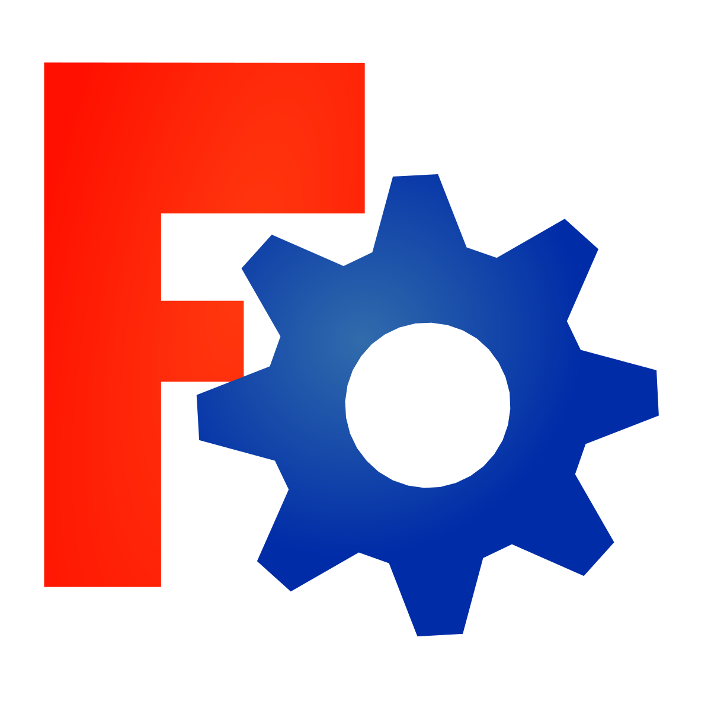
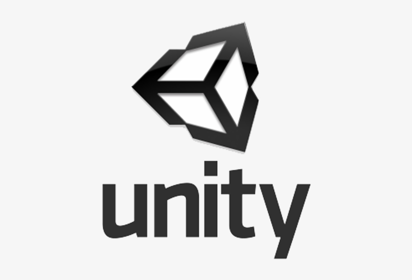
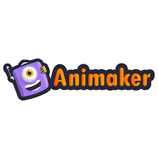
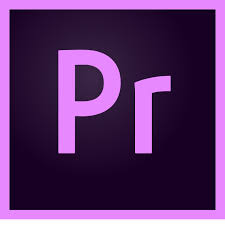
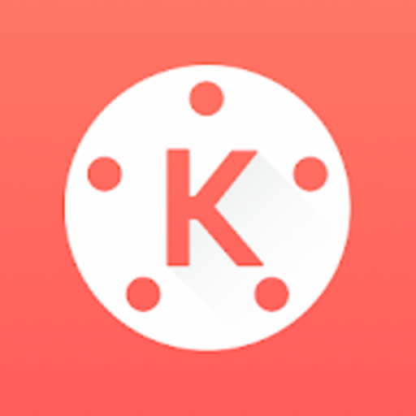

CAD Software

1. TinkerCAD
TinkerCAD an online 3D design app geared towards complete beginners coming from Autodesk.
The software features an intuitive block-building concept, allowing you to develop models from a set of basic shapes.
The online software comes with a library of millions of files that users can use to find shapes that suit them best and manipulate them as they wish.
It also has a direct interaction with third party printing services.
It is quite a simplistic program and will have limitations for some designs.
However, it is aimed mostly at people with no experience whatsoever with 3D modelling.

2. FreeCAD
FreeCAD is a completely free parametric 3D modeling tool that is open-source and enables you to design real-life objects of any size.
The parametric component makes editing easier. You can go to your model’s history and change the parameters to get a different model.
This software is not designed for professional purposes but is a good training tool.
The options it offers are quite basic but a good starting point when you have no experience.
3. BlocksCAD
This 3D software is specifically created for educational purposes, its development is done so that anyone can later use OpenSCAD, a more professional CAD software.
The commands for the development of the objects and their transformations are represented by colour blocks, reminiscent of the well-known construction toys, LEGO.
BlocksCAD’s code is fully compatible with OpenSCAD’s so you can give your models the last touch up on there.
Export formats can be OpenSCAD or STL. To make sure that anyone can learn to use the software, BlocksCAD has a Youtube channel with different tutorials on 3D modeling.
4. Creo
Creo CAD software is one of the market leaders in product design, developed by Parametric Technology Corporation more than 30 years ago.
It integrates many functionalities such as thermal, structural, motion, parametric and freestyle surface generation and direct modeling.
It is a complete tool, ideal for additive manufacturing, that will allow you to perform all your dimensioning calculations while modelling your final idea.
The latest Creo 5.0 version was released in 2018 and features an improved user interface, redesigned for a better handling. A 30-day trial version is available free of charge.

5. Fusion 360°
Fusion 360 is a cloud-based 3D CAD program. It’s unique in the sense that it uses the power of the could to bring together design teams to collaborate on complex projects.
An advantage of the Fusion 360° platform is it stores the entire history of the model including all the changes.
It contains numerous design options, including freeform, solid and mesh modeling. It operates on a monthly payment subscription basis.
The developers also regularly update the features, making it better as new instalments come along.
It runs on multiple platforms and allows users to access their information wherever they want.
In i.materialise’s poll in 2017, they noticed a jump in the program’s popularity in the last two years.
Many people have praised the software’s professional capabilities and user-friendly interface and workflow.

6. Solidworks
Published by Dassault Systèmes, it is often used by professional 3D designers. It is a parametric featured-based model.
The software includes a wide range of features such as design validation tools, or reverse engineering.
It tends to be used for industrial objects. It is quite practical and detailed.
One of its special features is that unlike many other software that mimic curves through gently inclining flat structures, Solidworks uses a system of NURBS.
This system allows to create very detailed curvatures. Also, instead of polygonal modeling, it uses dimensional sketching so that resizing becomes far less of a hassle.
One disadvantage that is often brought up by users of the software is the limited ability to import .STL files.
If you wish to download and edit .STL files, a secondary program will most likely be necessary.
The file format is very much an output file format and not intended for post-design processing.

7. AutoCAD
AutoCAD software from Autodesk was one of the first CAD software to be released on the market in 1982, making it a very established CAD software across industries.
Even though AutoCAD is popular and widely used, in the 3D printing community its popularity has decreased lately according to i.materialise’s poll.
Many users cite that although it is ideal for 2D drafting, it is not the easiest to use for 3D modeling.
Indeed, the learning curve to master macros and scripts is steep for moving beyond simple parts.
The software is aimed at professionals with experience in programming models algorithmically.
If you have that skill, there is little you can’t do with AutoCAD. The 3D models can readily be converted to STL files for 3D printing.
Since 2010, AutoCAD was released on a mobile and web-app as well, called AutoCAD 360.

8. CATIA
The CATIA CAD solution has historically been developed for Dassault Aviation’s own needs.
It is more than a simple CAD Software, as it is also a multi-platform software suite for CAD, CAM (Computer Aided Manufacturing), CAE (Computer Aided Engineering) and more.
It is powered by Dassault Systèmes’ 3DEXPERIENCE platform.
CATIA innovates product design and experience by integrating various approaches in product design and development, enabling multiple disciplines to leverage their existing tools throughout the stages of product development process.
Therefore, the software is very useful for industrial and creative designers, mechanical engineers, and systems architects.
9. OpenSCAD
OpenSCAD is a free, open-source CAD software aimed at making solid 3D models.
It is suitable for experienced users seeking a platform for an elaborated project.
Also, given its Constructive Solid Geometry (CSG) and the Extrusion of 2D outlines, this software is intuitive for coders/programmers.
It is great for simple shapes that are already parametrically defined.
Since it is completely based on description language, the program will not be intuitive for everyone at all.
10. Rhino
The company behind this software markets it as the world’s most versatile 3D-modeler. It is a commercial 3D computer graphics and CAD software.
The program uses a precise and mathematical model known as NURB which allows to manipulate points, curves, meshes, surfaces, solids and more in all sorts of ways.
Rhino3D’s strong point is its wide range of design features. It offers great versatility in creating complex 3D models.
Many users have reported however that the software is difficult to learn and will take a lot of practice to master.
It is also reportedly not the most accurate software at capturing user intent.
The software is available for download in a variety of bundles on their website at various prices.
Text Editor

1. Notepad++
Notepad++ is a text and source code editor for use with Microsoft Windows.
It supports tabbed editing, which allows working with multiple open files in a single window. The project's name comes from the C increment operator.
Notepad++ is distributed as free software. At first the project was hosted on SourceForge.net, from where it has been downloaded over 28 million times, and twice won the SourceForge Community Choice Award for Best Developer Tool.
The project was hosted on TuxFamily [fr] from 2010 to 2015; since 2015 Notepad++ has been hosted on GitHub. Notepad++ uses the Scintilla editor component.
Notepad++ is a source code editor.
2. Sublime Text
Sublime Text is a shareware cross-platform source code editor with a Python application programming interface (API).
It natively supports many programming languages and markup languages, and functions can be added by users with plugins, typically community-built and maintained under free-software licenses.
Sublime HQ also offers Sublime Merge, a Git GUI and merging tool, released in 2018.
Sublime Text contains 23 different visual themes, with the option to download additional themes and configure custom themes via third-party plugins

3. Atom
Atom is a free and open-source text and source code editor for macOS, Linux, and Microsoft Windows with support for plug-ins written in JavaScript, and embedded Git Control, developed by GitHub.
Atom is a desktop application built using web technologies. Most of the extending packages have free software licenses and are community-built and maintained.
Atom is based on Electron (formerly known as Atom Shell), a framework that enables cross-platform desktop applications using Chromium and Node.js.
It is written in CoffeeScript and Less.Atom was released from beta, as version 1.0, on 25 June 2015.
Its developers call it a "hackable text editor for the 21st Century". It is fully customizable in HTML, CSS, and JavaScript.
4. Brackets
Brackets is a source code editor with a primary focus on web development.
Created by Adobe Systems, it is free and open-source software licensed under the MIT License, and is currently maintained on GitHub by Adobe and other open-source developers.
It is written in JavaScript, HTML and CSS. Brackets is cross-platform, available for macOS, Windows, and most Linux distributions.
The main purpose of Brackets is its live HTML, CSS and JavaScript editing functionality.
5. UltraEdit
UltraEdit is a commercial text editor for Microsoft Windows, Linux and OS X created in 1994 by the founder of IDM Computer Solutions Inc., Ian D. Mead.
The editor contains tools for programmers, including macros, configurable syntax highlighting, code folding, file type conversions, project management, regular expressions for search-and-replace, a column-edit mode, remote editing of files
via FTP, interfaces for APIs or command lines of choice, and more.
Files can be browsed and edited in tabs, and it also supports Unicode and hex editing mode.
UltraEdit is Trialware: It can be evaluated for free for 30 or 15 days, depending on usage. After expiration of this period, the application will work only with a regular license key.

6. Komodo Edit
Komodo Edit is a free and open source text editor for dynamic programming languages.
It was introduced in January 2007 to complement ActiveState's commercial Komodo IDE.
As of version 4.3, Komodo Edit is built atop the Open Komodo project.Komodo Edit 4.0 was originally a freeware version of Komodo IDE 4.0, released in 2007-02-14.
On 2008-03-05, ActiveState Software Inc. announced Komodo Edit 4.3 to be open-sourced software, licensed under Mozilla Public License (MPL), GNU General Public License (GPL), and GNU Lesser Public License (LGPL).
7. BBEdit
BBEdit is a proprietary text editor made by Bare Bones Software, originally developed for Macintosh System Software 6, and currently supporting macOS.
BBEdit is designed for use by software developers and web designers. It has native support for many programming languages and custom modules can be created by users to support any language.
BBEdit is not a word processor, meaning it does not have text formatting or page layout features. BBEdit supports the Open Scripting Architecture and can be scripted and recorded using AppleScript and other languages, as well as having the
ability to execute AppleScripts itself.
8. TextMate
TextMate is a general-purpose GUI text editor for macOS created by Allan Odgaard. TextMate features declarative customizations, tabs for open documents, recordable macros, folding sections, snippets, shell integration, and an extensible
bundle system.
TextMate allows users to create their own arbitrarily complex syntax highlighting modes by using a modified version of the Apple ASCII property list format to define language grammars.
These grammars allow nesting rules to be defined using the Oniguruma regular expression library, and then assigned specific “scopes”: compound labels which identify them for coloration.

9. Bluefish
Bluefish is a free software advanced text editor with a variety of tools for programming and website development.
It supports coding languages including HTML, XHTML, CSS, XML, PHP, C, C++, JavaScript, Java, Go, Vala, Ada, D, SQL, Perl, ColdFusion, JSP, Python, Ruby and shell.
It is available for many platforms, including Linux, macOS and Windows, and can be used via integration with GNOME or run as a standalone application.
Designed as a compromise between plain text editors and full programming IDEs, Bluefish is lightweight, fast and easy to learn, while providing many IDE features.
It has been translated into 17 languages.
10. TextPad
TextPad is a text editor for the Microsoft Windows family of operating systems.
It is produced by Helios Software Solutions. It is currently in its eighth major version.
TextPad was initially released in 1992 as shareware, with users requested to pay a registration fee to support future development.
As of 1996 the company was an associate member of the Association of Shareware Professionals.
By 1998 the company was pointing out that the editor was "shareware (try before you buy)" and payment was necessary to continue to use it.
Game Engine
1. Unreal Engine
One of the most popular and widely used game engines is the Unreal Engine by Epic Games.
The original version was released in 1998 and 17 years later it continues being used for some of the biggest games every year.
Notable titles made with Unreal Engine include the Gears of War series, Mass Effect series, Bioshock series, and the Batman: Arkham series.
The strength of the Unreal Engine is its ability to be modified enough that games can be made into very unique experiences.
The latest version, Unreal Engine 4, is said to be the easiest one to use when in the hand tools of a professional.

2. Unity
One of them is Unity, a multi-platform game engine that allows you to create interactive 3D content with ease.
A lot of indie developers use Unity for its excellent functionality, high-quality content, and ability to be used for pretty much any type of game.
Recent notable titles made with Unity include Lara Croft Go, Her Story, Pillars of Eternity, and Kerbal Space Program.
One of the best things about Unity 5 is the Personal Edition, which is free for everyone to download.
It includes the engine with all features and can (for the most part) be used to make games on every platform.
The problem is that the Professional Edition, which has a host of excellent tools, requires that you pay a monthly fee.
3. GameMaker
Unlike most other game engines, GameMaker: Studio has become widely used because it doesn’t require programming knowledge to use.
Instead, users can “point-and-click” to create games much easier and faster than coding with native languages.
Some of the best titles made with GameMaker include Spelunky, Hotline Miami, Super Crate Box, and the upcoming Hyper Light Drifter.
GameMaker is popular because you can make a game without having to learn a programming language first, and those that do have coding experience can use it to make their game better.
The problem with GameMaker and other point-and-click engines is that developers are much more limited than with other engines.
4. Godot
The Godot engine is great for making both 2D and 3D games.
The engine “provides a huge set of common tools, so you can just focus on making your game without reinventing the wheel.”
It’s free to use and it’s open-source through the MIT license.
No royalties, no subscription fees, no hidden strings—whatever you develop through the Godot engine is yours.
Godot has a community that’s constantly fixing bugs and developing new features, which is always a good sign.
An active community means answers to even your most specific Godot-related questions.
5. AppGameKit
“AppGameKit is an easy to learn game development engine, ideal for Beginners, Hobbyists & Indie developers.” Does that sound like you?
AppGameKit focuses on quickly coding and building apps and being able to share them across platforms. This rapid iteration and cross-platform sharing is geared towards mobile game development, but handles most platforms:
iPhones and iPads, Linux, HTML5 Browsers, Raspberry Pi, macOS, Windows, Android.
AppGameKit costs $79.99, with options to bundle the base product with add-ons, like the Visual Editor, to save money on both products.f this period, the application will work only with a regular license key.
6. CryEngine
The CryEngine platform is free to use.
You get the full engine source code and all the engine features without having to pay any license fees, royalties, or other hidden fees.
The CryEngine is a visually stunning engine. The graphics are beautiful and the characters are life-like.
That’s right—if you were looking to dive into the world of virtual reality game creation, CryEngine has you covered.
In addition to the engine itself, CryEngine also provides plenty of free learning resources.
Tutorials, forums, and documentation give you the tools you need to get started.
7. Amazon Lumberyard
Amazon Lumberyard is the engine built by Amazon (as the name suggests). According to the site, Lumberyard is “Free. Powerful. Fully Customizable.”
The game engine has “no royalties or seat fees, frictionless integration with Twitch and AWS, plus much more on the horizon.”
If multiplayer games are your thing, Lumberyard has the tools in place for you to make that happen.
There is a “Getting Started Guide” video series for Lumberyard which will get you up to speed and walk you through building your first game prototype with the engine.
8. RPG Maker
The best thing about RPG maker is the same reason why it occasionally gets a bad rap—just about anyone can use it to create a game.
The software is designed to let you build a complete game, from start to finish (even if you don’t know anything about game programming).
“The RPG Maker series allows you to customize every aspect of your game with an easy-to-use interface, making it perfect for beginners yet powerful enough for experts.”
There are several RPG Maker products. RPG Maker MV costs $79.99. There’s a free trial option for Windows users.

9. LibGDX
“Libgdx is a Java game development framework that provides a unified API that works across all supported platforms.”
API is the abbreviation for application programming interface—having a single API makes libGDX a great choice for cross-platform development. It doesn’t matter which platform you’re targeting: Windows, iOS, Linux, Mac OS, etc. all use the
same API. LibGDX allows you to run and debug your game natively on your desktop.
This makes it easy to generate rapid iterations of your game and test the changes quickly (since you won’t need to fire up iOS/Android etc. to test those changes).
10. Urho3D
“Urho3D is a free lightweight, cross-platform 2D and 3D game engine implemented in C++ and released under the MIT license.”
There are walkthroughs for creating your first project, and several other forum topics ranging from cutting holes in terrain to developing basic material effects for rendering.
Urho3D is currently on version 1.7, and as we mentioned earlier it’s completely free to download.
There’s a long list of credits and an actively contributing community.
The website has a complete list of features, including the version in which those features were first implemented.
Animation Software
1. Powtoon
Powtoon is the leading visual communication platform that enables anyone to create professional-looking and engaging videos and presentations in minutes, without any design or technical skills.
More than 30 million people, including 96% of the Fortune 500 companies, use Powtoon to engage their audience — be it for corporate training and L&D, HR, internal comms, marketing, sales, and more.
Founded in 2012, Powtoon has offices in London, San Francisco, Tel Aviv, Ukraine, and the Philippines.
With Powtoon you can easily create your own free (or paid) studio-quality HD live and animated videos — eliminating the high cost of hiring a video production team.
Powtoon offers a huge library of professionally-designed templates, scenes, characters, props, videos, soundtracks, and more.
2. Autodesk Maya
Autodesk Maya, commonly shortened to just Maya, is a 3D computer graphics application that runs on Windows, macOS and Linux, originally developed by Alias Systems Corporation (formerly Alias|Wavefront) and currently owned and developed by
Autodesk.
It is used to create assets for interactive 3D applications (including video games), animated films, TV series, and visual effects.
3. 3ds Max Design
Autodesk 3ds Max, formerly 3D Studio and 3D Studio Max, is a professional 3D computer graphics program for making 3D animations, models, games and images. It is developed and produced by Autodesk Media and Entertainment.
It has modeling capabilities and a flexible plugin architecture and must be used on the Microsoft Windows platform.
It is frequently used by video game developers, many TV commercial studios, and architectural visualization studios.
It is also used for movie effects and movie pre-visualization.
4. Adobe Animate
Adobe Animate (formerly Adobe Flash Professional, Macromedia Flash, and FutureSplash Animator) is a multimedia authoring and computer animation program developed by Adobe Systems.
Animate is used to design vector graphics and animation for television programs, online video, websites, web applications, rich internet applications, game development and other interactive projects.
The program also offers support for raster graphics, rich text, audio video embedding, and ActionScript 3.0 scripting.
Animations may be published for HTML5, WebGL, Scalable Vector Graphics (SVG) animation and spritesheets, and legacy Flash Player (SWF) and Adobe AIR formats.
5. Cinema 4D
Cinema 4D is a 3D software suite developed by the German company Maxon.
Cinema 4D is trusted by many professional designers and companies.
It offers reliable tools to create stunning renders, videos, animations and motion graphics.

6. Blender
Blender is a free and open-source 3D computer graphics software toolset used for creating animated films, visual effects, art, 3D printed models, motion graphics, interactive 3D applications, virtual reality and computer games.
Blender's features include 3D modeling, UV unwrapping, texturing, raster graphics editing, rigging and skinning, fluid and smoke simulation, particle simulation, soft body simulation, sculpting, animating, match moving, rendering, motion
graphics, video editing, and compositing.
7. KeyShot
KeyShot is real-time ray-tracing and global illumination program used to create 3D renderings, animations and interactive visuals.
With the CPU-based architecture, photo realistic real-time rendering can be achieved even on simple laptops without the need for special graphics cards.
It supports import for the greatest number of 3D file formats out of any rendering software, importing over 20 different file types, has an incredibly simple user interface with drag-n-drop material and environment .
8. Harmony
Toon Boom Animation Inc. is a Canadian software company that specializes in animation production and storyboarding software.
Founded in 1994 and based in Montreal, Quebec, Toon Boom develops animation and storyboarding software for film, television, web animation, games, mobile devices, training applications, and education.
It was acquired by Corus Entertainment in 2012.
Toon Boom software is used in over 130 countries, and was awarded the Primetime Emmy Award in 2005 and 2012, among other awards.

9. Animaker
Animaker, Inc DIY (Do-it-Yourself), Professional Live and/or Animated videos in minutes!! Animaker, is one of the fastest growing SaaS Product companies in the content & video making space with over 7 Million users in 220 countries.
Quickly, without technical expertise, create professional 4k quality videos (animated or live) for On-boarding, Marketing, Branding, Simplify Complex Concepts, etc. in minutes allowing companies to easily adapt to market changes to create
competitive advantage.
10. Vyond
Vyond lets you create videos easily with our library of templates, sounds, props, and so much more.
Move your audience to action.
Increase engagement, retention, motivation, and conversion using rich media made simply with Vyond.
Vyond is changing the way the world communicates, one video at a time.
Video Editing Software

1. Adobe Premiere Pro
Adobe Premiere Pro CC is one of two video editing software packages used by top professionals, on everything from YouTube videos and commercials to TV shows or blockbuster movies.
The other one is Final Cut Pro, the second on our list.
So how do you choose between them? That will depend on a number of factors, but the first and most obvious is that Final Cut Pro is only available for Mac.
So if you're a professional using Windows, we can definitely say that Premiere Pro is the best video editing software for your needs.

2. Final Cut Pro X
Final Cut Pro, previously Final Cut Pro X, is a professional non-linear video editing application published by Apple Inc.
as part of their Pro Apps family of software programs. It was released on June 21, 2011 for sale in the Mac App Store.
It is the successor to Final Cut Pro. It was renamed "Final Cut Pro" in November 2020, coinciding with the release of macOS Big Sur.
3. Adobe Premiere Elements
Adobe Premiere Elements is a video editing software application published by Adobe Systems.
It is a scaled-down version of Adobe Premiere Pro and is tailored to novice editors and consumers.
The entry screen offers clip organization, editing and auto-movie generation options.
Premiere Pro project files are not compatible with Premiere Elements projects files.
4. Adobe Premiere Rush
Adobe Premiere Rush is the first all-in-one, cross-device app for creating and sharing online videos – fast. Edit, fix color, adjust audio, add titles, and more with easy-to-use tools, customizable Motion Graphics templates, and integration
with Adobe Stock.
And share your videos to your favorite social channels right from the app.
Premiere Rush is available for free as part of a Starter plan and there are also paid plans available.
5. Corel VideoStudio Ultimate
Corel VideoStudio (formerly Ulead VideoStudio) is a video editing software package for Microsoft Windows.
The software allows both storyboard and timeline-oriented editing.
Different formats are supported for source clips, and the resulting video can be exported to DVD, AVCHD, HD-DVD and AVI.
VideoStudio also supports direct DV and HDV capturing to disk.
6. DaVinci Resolve
DaVinci Resolve is a color correction and non-linear video editing (NLE) application for macOS, Windows, and Linux, originally developed by da Vinci Systems, and now developed by Blackmagic Design following its acquisition in 2009.
In addition to the commercial version of the software, Blackmagic Design also distributes a free edition, with reduced functionality, simply named DaVinci Resolve (formerly known as DaVinci Resolve Lite).
7. CyberLink PowerDirector
CyberLink PowerDirector is a serious bit of software for serious video editors: this is excellent video editing software that delivers professional and high-quality features, without a Hollywood budget.
Get cracking on the 100-track timeline and you'll soon find yourself making the most of multitudes of stabilisation and video correction tools, professional effects, multi-cam editing, motion tracking and surprisingly easy trimming.
8. Pinnacle Studio
Pinnacle Studio is a video editing program originally developed by Pinnacle Systems as a consumer level software.
Going for Pinnacle Studio is well worth considering if you've never edited video before and want to delve in for the first time.
It's cheaper than most of the paid-for tools on this list, and you can always bail out if you find within the first 30 days if it's just not for you.

9. KineMaster
If you think that trying to edit video on your smartphone or tablet is a pointless exercise, KineMaster will make you think again.
Available for Android devices, iPhones and iPads, we'd describe this option as the best video editing software for Android (free or paid-for), because it goes way above and beyond what you'd expect from a mobile app.
10. Lightworks
LWKS Lightworks is another professional video editing suite that's been used on major Hollywood productions including Shutter Island, Pulp Fiction, 28 Days Later, The Wolf of Wall Street and Mission Impossible.
So it’s exciting that there’s a free version that makes it accessible to everyone.